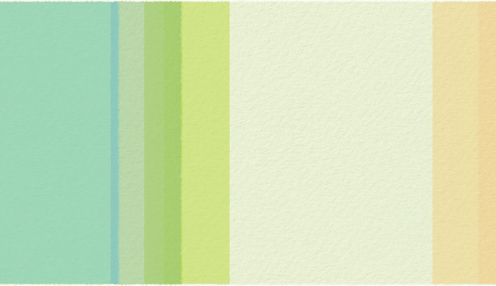

De lente komt er bijna aan! Maar eerst nog wintersporten...?




Misschien ben je al op wintersport geweest of ga je nog, ik heb de belangrijkste huidverzorgingstips voor wintersporters op een rijtje gezet.
Sneeuw, zon en temperaturen onder het minpunt; door de juiste gezichts- en huidverzorging kan ook jouw huid hier ten volle van meegenieten en er fris en rozig uit blijven zien!
-
•Smeer je meerdere keren per dag in
-
•Met zonnecrème moet je niet zuinig zijn, smeer een lekkere dikke laag
-
•Vergeet je lippen, neus en oren niet! Deze tere huid heeft ook aandacht en dus extra verzorging nodig
-
•Ook al schijnt de zon niet, draag altijd een goggle of zonnebril
-
•Crème werkt vaak pas na een half uurtje, dus smeer jezelf op tijd in (en niet pas op de piste!)
-
•Via je hoofd verlies je 80 procent van je warmte, draag daarom altijd een muts en een helm natuurlijk.
Je huid - en met name de gezichtshuid - heeft een hoop te verduren tijdens de wintersport. Je hebt te maken met flinke temperatuurverschillen, van de kou op de piste naar de warmte tijdens het après-skiën, maar ook de zon kan een hoop schade toebrengen aan de huid. Je huid wordt sneller droog, kan verbranden en veroudert hierdoor sneller. Wat extra aandacht voor huidverzorging tijdens de wintersport kan dus geen kwaad!
Gezichtscrème zonder water
Wist je dat een hoop gezichtscrèmes - en ook zonnebrandcrèmes - gemaakt worden op basis van water? Waarschijnlijk is dit nieuw voor je. Toch moet je eens goed kijken naar de gezichtscrème die je gebruikt, want wanneer je deze ook op de piste draagt, kan het water in de crème bevriezen en schade toebrengen aan de huid. En dat zonder dat je het in de gaten hebt.
Veel plezier!
Tips om droge lippen te voorkomen:
Als je droge lippen hebt kan je ze 's morgens en 's avonds poetsen met tandpasta daar worden ze ook mooi rood en vol van.
Bij droge lippen helpt vaseline heel erg goed het is namelijk erg vet.... ook voor de rest van je gezicht kan je het gebruiken.
Je hebt echt pijnlijke, droge lippen en je hebt niets bij de hand? Smeer dan wat boter op je lippen.
Liefs,
Beans Beauty Salon
Wil je de nieuwsbrief niet meer ontvangen
mail dit dan naar beansbeautysalon@gmail.com